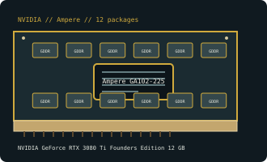

[ NVIDIA // INDIVIDUAL GPU RECORD ]
NVIDIA GeForce RTX 3080 Ti Founders Edition 12 GB
2021; Ampere GA102; 10,240 CUDA, 80 RT, 320 Tensor cores; 12 GB GDDR6X, 384-bit; PCIe 4.0 x16; 350 W; FE 12-pin. This is the NVIDIA reference-board retail model, not an interchangeable specification for every partner card with the same GPU.

Recorded specifications
| Catalog identity | NVIDIA GeForce RTX 3080 Ti Founders Edition 12 GB |
|---|---|
| GPU and architecture | Ampere GA102-225; 10,240 CUDA cores. |
| Graphics memory | 12 GB GDDR6X, 384-bit; discrete board memory. |
| Host interface | PCI Express 4.0 x16 |
| Board power | 350 W |
| Auxiliary power | Founders Edition 12-pin connector; supplied adapter uses two 8-pin PCIe leads |
| Vendor-first catalog | NVIDIA vendor directory |
Compatibility and maintenance
The card uses a full-length PCI Express 4.0 x16 interface; it can negotiate with a compatible lower-generation PCIe slot, but platform firmware, physical slot clearance, and system support still matter. Budget for the board’s 350 W rating and provide Founders Edition 12-pin connector; supplied adapter uses two 8-pin PCIe leads; PSU capacity is system-dependent, so follow the PSU/card maker's combined-system recommendation rather than treating board power as the full-system requirement. Confirm the exact Founders Edition dimensions and free slot space before installation. Attach displays to the card, install a matching NVIDIA driver branch for the operating system, and do not assume ports, adapter bundle, or driver support are identical across partner boards using the same GPU.
- Check case clearance, adjacent card obstruction, and connector orientation against the exact FE chassis before buying or installing.
- Seat the card and auxiliary connectors fully with power disconnected; inspect connector and fan condition before use.
- Verify supported operating systems and driver branch for this GPU generation using NVIDIA's driver lookup. A compatible slot alone does not guarantee a supported system or workload.
Sources & further reading
- TechPowerUp — NVIDIA GeForce RTX 3080 Ti Founders Edition 12 GB specification recordModel/family technical reference for GPU, memory, interface, and board-power characteristics. Board dimensions and connector details can vary; verify the physical card label and NVIDIA FE documentation.
- NVIDIA — GeForce driver lookupManufacturer product-family and software-support reference. Use the GeForce driver lookup to confirm OS and release-branch compatibility for this legacy model.